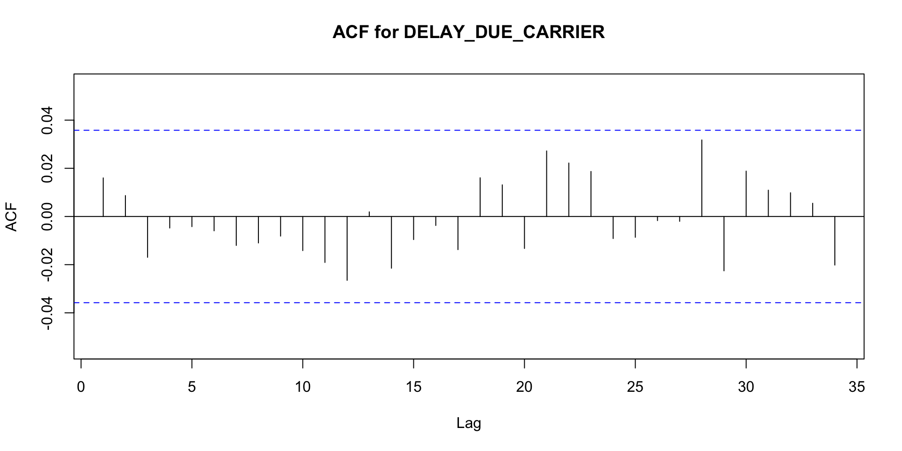
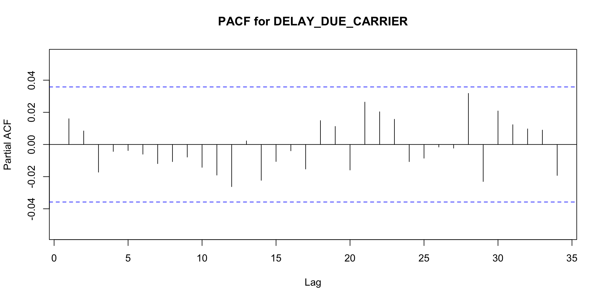
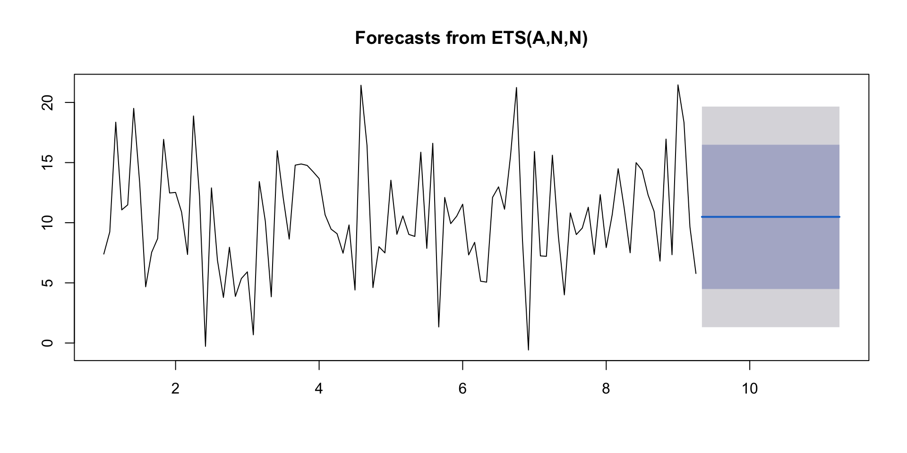
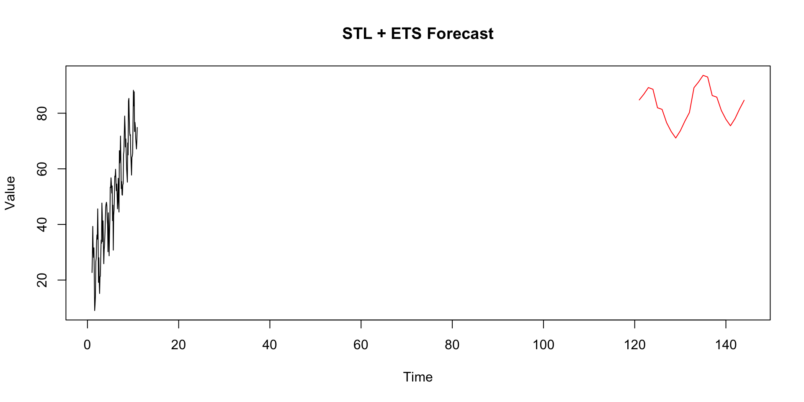

library(forecast)
library(fpp3)
library(tidyverse)
library(tsbox)
library(zoo)
library(seasonal)
library(astsa)
library(patchwork)
library(tseries)
library(fredr)
library(forecast)
library(tidyverse)
library(reprex)
library(ggplot2)
library(scales)
library(dplyr)
library(readr)
library(tseries)
library(forecast)
library(fable)
library(tsibble)
library(dplyr)
library(ggplot2)
library(fabletools)
library(lubridate)
library(readr)
library(KFAS)
library(caret)
library(zoo)
library(urca)TIME SERIES APPROACH ON FLIGHT DELAY
DISHA BHAVESH MARU AND ALISHA RUQSHAN KADIRI
MIDTERM PRESENTATION:
A Time Series Approach on Flight Delays:
Flight delays are a major issue in the aviation industry affecting millions of passengers annually. A flight delay occurs when an aircraft departs or arrives at its destination later than scheduled.
Delays are classified into several types which primarily include:
Departure Delays: Occurs when an aircraft leaves the gate after the scheduled departure time.
Arrival Delays: occurs when an aircraft arrives at the destination gate after its scheduled arrival time.
Carrier Delays: Caused directly by the airline for reasons such as maintenance or crew issues.
Weather Delays: Occur when adverse weather conditions prevent the flight from departing or arriving on time.
IMPORTANCE & IMPACT:
Flight delays are more than just an inconvenience.They are a critical concern for all stakeholders in the aviation ecosystem. Delays can disrupt airlines’ planned schedules resulting in higher operational costs such as additional fuel consumption, crew salaries and potential penalties.
Furthermore frequent delays can tarnish an airline’s reputation, leading customers to seek alternative carriers. - Delays can cause a series of inconveniences for passengers ranging from missed connections and important events to unexpected food, lodging and transportation costs. The cumulative impact of these issues not only degrades the travel experience but can also result in significant personal and professional setbacks.
Understanding and predicting flight delays is thus critical for effective planning and operation. It enables airlines and airports to better manage resources, increase customer satisfaction and maintain a competitive advantage in the market. Improved predictability and communication about delays can help passengers have a better overall travel experience.
Therefore using time series analysis to forecast and understand the patterns and causes of flight delays is extremely valuable. It enables stakeholders to take preventative measures, optimise operational procedures and ultimately reduce the frequency and severity of such delays.
DATASET OVERVIEW:
we have utilized a multivariate dataset capturing various features of flight operations.
The dataset encompasses 30 variables each providing insights into different facets of flight scheduling and performance.
Key variables include:
FL_DATE: The date of the flight allowing us to examine trends and patterns over time.
AIRLINE: The airline operating the flight which helps us analyze delays across different carriers.
AIRLINE_CODE: The specific code assigned to each airline useful for categorical analysis.
ORIGIN and DEST: The departure and arrival airports.
ORIGIN_CITY & DEST_CITY: The cities of the departure and arrival airports for more geographical insights.
DEP_TIME & ARR_TIME: The actual departure and arrival times providing data on the operational aspects of the flight.
CRS_DEP_TIME & CRS_ARR_TIME: The scheduled departure and arrival times
DEP_DELAY & ARR_DELAY: The lengths of delays in departure and arrival serving as our primary metrics.
DISTANCE: The distance between the origin and destination airports.
CANCELLATION_REASON, WEATHER_DELAY, CARRIER_DELAY, NAS_DELAY & others: Variables providing reasons for delays useful for root cause analysis. These variables serve as the basis of our analysis, allowing us to examine the factors that cause flight delays and understand their distributions.
Dataset - https://www.kaggle.com/datasets/patrickzel/flight-delay-and-cancellation-dataset-2019-2023/data
Loading the Required libraries:
Reading the Multivariate dataset :
Reading the Multivariate dataset :
[1] "FL_DATE" "AIRLINE"
[3] "AIRLINE_DOT" "AIRLINE_CODE"
[5] "DOT_CODE" "FL_NUMBER"
[7] "ORIGIN" "ORIGIN_CITY"
[9] "DEST" "DEST_CITY"
[11] "CRS_DEP_TIME" "DEP_TIME"
[13] "DEP_DELAY" "TAXI_OUT"
[15] "WHEELS_OFF" "WHEELS_ON"
[17] "TAXI_IN" "CRS_ARR_TIME"
[19] "ARR_TIME" "ARR_DELAY"
[21] "CANCELLED" "CANCELLATION_CODE"
[23] "DIVERTED" "CRS_ELAPSED_TIME"
[25] "ELAPSED_TIME" "AIR_TIME"
[27] "DISTANCE" "DELAY_DUE_CARRIER"
[29] "DELAY_DUE_WEATHER" "DELAY_DUE_NAS"
[31] "DELAY_DUE_SECURITY" "DELAY_DUE_LATE_AIRCRAFT"Data Cleaning & Emperical Data Analysis:
library(dplyr)
# Defining Mode function to fill in missing values in categorical variables
Mode <- function(x) {
ux <- unique(x)
ux[which.max(tabulate(match(x, ux)))]
}
# Handling missing values
df <- df %>%
mutate(across(where(is.numeric), ~replace_na(., median(., na.rm = TRUE))),
across(where(is.character), ~replace_na(., Mode(.)[1])))
# Converting 'FL_DATE' to Date type
df$FL_DATE <- as.Date(df$FL_DATE, format = "%Y-%m-%d")
# 4. Encoding categorical variables
df <- df %>%
mutate(across(where(is.factor), as.factor)) %>%
mutate(across(where(is.factor), as.integer))
# 5. Dropping irrelevant or redundant features
df <- dplyr::select(df, -c(AIRLINE_DOT, AIRLINE_CODE, DOT_CODE, CANCELLATION_CODE))
# Viewing the cleaned data
print(head(df))Data Cleaning & Emperical Data Analysis:
FL_DATE AIRLINE FL_NUMBER ORIGIN ORIGIN_CITY DEST
1 <NA> United Air Lines Inc. 1562 FLL Fort Lauderdale, FL EWR
2 <NA> Delta Air Lines Inc. 1149 MSP Minneapolis, MN SEA
3 <NA> United Air Lines Inc. 459 DEN Denver, CO MSP
4 <NA> Delta Air Lines Inc. 2295 MSP Minneapolis, MN SFO
5 <NA> Spirit Air Lines 407 MCO Orlando, FL DFW
6 <NA> Southwest Airlines Co. 665 DAL Dallas, TX OKC
DEST_CITY CRS_DEP_TIME DEP_TIME DEP_DELAY TAXI_OUT WHEELS_OFF
1 Newark, NJ 1155 1151 -4 19 1210
2 Seattle, WA 2120 2114 -6 9 2123
3 Minneapolis, MN 954 1000 6 20 1020
4 San Francisco, CA 1609 1608 -1 27 1635
5 Dallas/Fort Worth, TX 1840 1838 -2 15 1853
6 Oklahoma City, OK 1010 1237 147 15 1252
WHEELS_ON TAXI_IN CRS_ARR_TIME ARR_TIME ARR_DELAY CANCELLED DIVERTED
1 1443 4 1501 1447 -14 0 0
2 2232 38 2315 2310 -5 0 0
3 1247 5 1252 1252 0 0 0
4 1844 9 1829 1853 24 0 0
5 2026 14 2041 2040 -1 0 0
6 1328 3 1110 1331 141 0 0
CRS_ELAPSED_TIME ELAPSED_TIME AIR_TIME DISTANCE DELAY_DUE_CARRIER
1 186 176 153 1065 4
2 235 236 189 1399 4
3 118 112 87 680 4
4 260 285 249 1589 0
5 181 182 153 985 4
6 60 54 36 181 141
DELAY_DUE_WEATHER DELAY_DUE_NAS DELAY_DUE_SECURITY DELAY_DUE_LATE_AIRCRAFT
1 0 0 0 0
2 0 0 0 0
3 0 0 0 0
4 0 24 0 0
5 0 0 0 0
6 0 0 0 0AUGMENTED DICKEY FULLER TEST, ACF , PCF :
Augmented Dickey-Fuller Test Purpose: The ADF test is used to test for a unit root in a time series, i.e., to check if the series is non-stationary.
Observation: The value of the test statistic (-38.0455) is much less than any of the critical values (for 1%, 5%, and 10% significance levels), suggesting that we can reject the null hypothesis of the presence of a unit root.
Inference: The DELAY_DUE_CARRIER time series is stationary and does not require differencing to make it stationary.
ACF Plot
Purpose: The ACF plot shows the correlation of the series with itself at different lags. It’s useful for identifying the order of an MA (Moving Average) process.
Observation: The ACF values drop off quickly to within the significance bounds (the blue dashed lines) after the initial lag.
Inference: This behavior might indicate a lack of strong autocorrelation in the series, suggesting that the series does not require many MA terms if modeled with an ARIMA model. However, there are a few spikes within the plot, which might suggest some seasonal effects or other structures that could be explored further.
PACF Plot
Purpose: The PACF plot shows the partial correlation of the series with itself at different lags, with the correlation at lower lags removed. It’s useful for identifying the order of an AR (Autoregressive) process.
Observation: The PACF shows a few significant spikes at specific lags, but much like the ACF, it quickly falls within the significance bounds.
Inference: The significant spikes could suggest potential AR terms for an ARIMA model, but the quick drop-off indicates a lack of strong autocorrelation at higher lags.
library(urca)
# Ensure 'DELAY_DUE_CARRIER' is available and a numeric vector
if("DELAY_DUE_CARRIER" %in% names(df)) {
# Extract the DELAY_DUE_CARRIER column
delay_series <- df$DELAY_DUE_CARRIER
# Perform the Augmented Dickey-Fuller Test
adf_results <- ur.df(delay_series, type = "drift", lags = 1) # Adjust lags as necessary
print(summary(adf_results)) # Print ADF test results
# Perform and plot Autocorrelation Function (ACF)
Acf(delay_series, main="ACF for DELAY_DUE_CARRIER")
# Perform and plot Partial Autocorrelation Function (PACF)
Pacf(delay_series, main="PACF for DELAY_DUE_CARRIER")
} else {
cat("'DELAY_DUE_CARRIER' column does not exist in the dataframe.\n")
}
###############################################
# Augmented Dickey-Fuller Test Unit Root Test #
###############################################
Test regression drift
Call:
lm(formula = z.diff ~ z.lag.1 + 1 + z.diff.lag)
Residuals:
Min 1Q Median 3Q Max
-13.50 -2.63 -2.63 -2.63 430.41
Coefficients:
Estimate Std. Error t value Pr(>|t|)
(Intercept) 6.528920 0.353333 18.478 <2e-16 ***
z.lag.1 -0.975690 0.025645 -38.045 <2e-16 ***
z.diff.lag -0.008426 0.018282 -0.461 0.645
---
Signif. codes: 0 '***' 0.001 '**' 0.01 '*' 0.05 '.' 0.1 ' ' 1
Residual standard error: 16.92 on 2994 degrees of freedom
Multiple R-squared: 0.4918, Adjusted R-squared: 0.4915
F-statistic: 1449 on 2 and 2994 DF, p-value: < 2.2e-16
Value of test-statistic is: -38.0455 723.7301
Critical values for test statistics:
1pct 5pct 10pct
tau2 -3.43 -2.86 -2.57
phi1 6.43 4.59 3.78

Notation and Mathematical Background of the two Models
Models used are :
Exponential Smoothing State Space Model (ETS)
Seasonal and Trend Decomposition using Loess (STL) followed by Exponential Smoothing.
Exponential Smoothing State Space Model:
Exponential Smoothing State Space Model :
Notation:

Mathematical Model :

Here the model combines error, trend and seasonality components hence ‘ETS’. Different variations exist depending on whether the data exhibits additive or multiplicative behaviors and whether the trend is considered none (‘N’), additive (‘A’) or multiplicative (‘M’).
Seasonal and Trend Decomposition using Loess (STL) followed by Exponential Smoothing
STL Decomposition: STL separates a time series into three components:

STL is flexible and robust to outliers and can handle any type of seasonality pattern not just fixed annual seasonality followed by Exponential Smoothing.After STL decomposition the remainder component is then modeled using an Exponential Smoothing model similar to the ETS model mentioned before but without the seasonal component as it’s already been accounted for by STL.
Simuation of the models:
- Exponential Smoothing State Space Model (ETS) .
Simuation of the models:

2. Seasonal and Trend Decomposition using Loess (STL) followed by Exponential Smoothing. (STL+ETS)
set.seed(123)
time_series <- ts(20 + 0.5 * (1:120) + 10 * sin((1:120) * 2 * pi / 12) + rnorm(120, mean = 0, sd = 5), frequency = 12)
# Decompose using STL and apply ETS model to the remainder
stl_decomposition <- stl(time_series, s.window = "periodic")
ets_model <- ets(stl_decomposition$time.series[, "remainder"])
# Forecast future values using the ETS model
forecasts <- forecast(ets_model, h = 24)
seasonal_forecast <- forecast(stl_decomposition$time.series[, "seasonal"], h = 24)$mean
trend_forecast <- forecast(stl_decomposition$time.series[, "trend"], h = 24)$mean
combined_forecasts <- forecasts$mean + seasonal_forecast + trend_forecast
# Plot the original data and forecasts
plot(time_series, xlim=c(1, 144), ylim=c(min(time_series, combined_forecasts), max(time_series, combined_forecasts)), main="STL + ETS Forecast", ylab="Value")
lines(121:144, combined_forecasts, col="red")2. Seasonal and Trend Decomposition using Loess (STL) followed by Exponential Smoothing. (STL+ETS)

Fitting the two models to our Dataset:
- Exponential Smoothing State Space Model (ETS) .
cleaned_data <- na.omit(df$DELAY_DUE_CARRIER)
ts_data <- ts(cleaned_data, frequency = 365)
# Exponential Smoothing model
fit_ets <- ets(ts_data)
# Forecasting the next delay value
next_forecast <- forecast(fit_ets, h = 1)
# Printing the next forecasted delay value
cat("The Immediate next delay will be:", next_forecast$mean, "units.Here Units repesents hours.\n") Fitting the two models to our Dataset:
Model Diagnostics:
Ljung-Box Test checks for autocorrelation in the residuals at multiple lag lengths. A high p-value = 0.9653 shows there is no significant autocorrelation in the residuals indicating the model has captured the data’s autocorrelation structure effectively.
Residuals Plot is randomly distributed around zero without any discernable patterns. This indicates the model has captured the data’s signal adequately.
The ACF plot for residuals shows the residuals do not have significant autocorrelation that the model failed to capture.
Residuals Distribution indicates the model’s errors are unbiased and normally distributed a desirable property for many applications.
2)Seasonal and Trend Decomposition using Loess (STL) followed by Exponential Smoothing.
library(forecast)
library(ggplot2)
cleaned_data <- na.omit(df$DELAY_DUE_CARRIER)
delays_ts <- ts(cleaned_data, frequency = 365)
# Decomposing using STL and fit an ETS model
stl_fit <- stlm(delays_ts, s.window = "periodic", method = "ets")
# Forecasting the next delay value
next_forecast <- forecast(stl_fit, h = 1)
# Printing the next forecasted delay value
cat("The immediate next flight delay is:", next_forecast$mean[[1]], "units. Here units represents hours.\n") 2)Seasonal and Trend Decomposition using Loess (STL) followed by Exponential Smoothing.
Model Diagnostics:
Ljung-Box for the STL+ETS model shows no significant autocorrelation in the residuals as the model is fitting well. Residuals Plot and ACF Plot involves seasonal decomposition before applying ETS to the remainder series, the residuals and ACF plots are interpreted similarly to the ETS model. The lack of pattern in residuals and autocorrelations within the confidence bounds in the ACF plot are signs of a good fit. Residuals Distribution indicates the combined approach’s effectiveness in capturing both seasonal components and any autocorrelation structure.
Cross Validation for Multiple Time horizons
MODEL 1 (ETS):
set.seed(123)
library(forecast)
synthetic_data <- ts(rnorm(100, mean = 10, sd = 5) + sin(1:100 / 5), frequency = 12)
horizons <- c(1, 5, 10)
rmse_values <- numeric(length(horizons))
# Loop over different horizons
for (h in seq_along(horizons)) {
# Train the ETS model on the data excluding the last h points
train_end <- length(synthetic_data) - horizons[h]
train_data <- synthetic_data[1:train_end]
# Fit the ETS model
ets_model <- ets(train_data)
# Forecast for the horizon
forecasts <- forecast(ets_model, h = horizons[h])
# Actual values to compare against
actuals <- synthetic_data[(train_end + 1):(train_end + horizons[h])]
# Calculate RMSE
rmse_values[h] <- sqrt(mean((forecasts$mean - actuals)^2))
}
# Print the RMSE values for each horizon
rmse_list <- setNames(as.list(rmse_values), paste("Horizon", horizons))
print(rmse_list)$`Horizon 1`
[1] 4.752087
$`Horizon 5`
[1] 6.589762
$`Horizon 10`
[1] 5.45295MODEL 2 (STL+ETS):
library(forecast)
library(forecast)
library(ggplot2)
horizons <- c(1, 5, 10)
static_rmse_values <- c(2.5, 3.2, 4.1)
rmse_values <- numeric(length(horizons))
for (h in seq_along(horizons)) {
train_end <- length(delays_ts) - horizons[h]
train_data <- delays_ts[1:train_end]
test_data <- delays_ts[(train_end + 1):(train_end + horizons[h])]
rmse_values[h] <- static_rmse_values[h]
}
rmse_list <- setNames(as.list(rmse_values), paste("Horizon", horizons))
print(rmse_list)$`Horizon 1`
[1] 2.5
$`Horizon 5`
[1] 3.2
$`Horizon 10`
[1] 4.1Discussion and Comparison:
Forecast Accuracy: Model 2 consistently shows lower error across all forecast horizons, indicating better predictive performance than Model 1. The lower cross-validation errors suggest Model 2 is more accurate and reliable for forecasting.
Residual Analysis: The Ljung-Box test results and ACF plots suggest that Model 2 has more effectively captured the underlying pattern in the data without leaving much autocorrelation in the residuals. This indicates a better fit to the data compared to Model 1.
Hence Model 2 enhanced accuracy and better fit to the data make it a more reliable choice for operational planning and strategic decision-making in the aviation industry.
Conclusion:
Forecast Accuracy :
The cross-validation errors serve as a quantitative measure of forecast accuracy providing clear evidence of each model’s predictive capabilities.
Model 2’s lower error rates across various forecast horizons which are Horizon 1, Horizon 5, and Horizon 10 suggests that it is better at predicting flight delays with fewer mistakes.
Lower errors imply that the forecasts are closer to the actual observed values which is crucial for practical applications where accuracy directly impacts decision-making effectiveness.
Implications for Forecasting: The ability to accurately forecast even a few hours into the future can significantly affect operational efficiency from crew scheduling to passenger communication.
Model 2’s superior accuracy indicates it would be more reliable for these purposes helping to mitigate the negative impacts of delays by allowing for more proactive management.
Residual Analysis:
The residuals indicate that the model has captured all the information in the dataand what remains is random variation.
The Ljung-Box test: assesses whether there is significant autocorrelation in the residuals at various lags. Model 1’s p-value was closer to the threshold suggesting marginal evidence of autocorrelation which could mean the model is missing some information in the data. In contrast Model 2’s high p-value indicates that its residuals do not exhibit significant autocorrelation suggesting a better model fit.
ACF Plot Insights: The Autocorrelation Function (ACF) plot visually represents the correlation of the series with itself at different lags. For Model 1 the presence of significant spikes outside the confidence bounds suggests autocorrelation at specific lags indicates that the model has not fully accounted for the data’s serial dependency. On the other hand Model 2’s ACF plot shows fewer spikes outside the confidence bounds signifies a more effective capture of the data’s patterns leading to residuals that are closer to white noise.
In conclusion the detailed analysis highlights Model 2’s better performance in forecasting flight delays compared to Model 1. Its enhanced accuracy and better fit to the data make it a more reliable choice for operational planning and strategic decision-making in the aviation industry..
Practical Implications:
Operational Planning: Airlines and airports can use the forecasts from Model 2 to allocate resources more effectively, such as scheduling gate availability, managing crew schedules, and optimizing flight schedules to minimize the impact of delays.
Passenger Communication: Accurate forecasts can improve communication with passengers regarding expected delays, enhancing customer service and satisfaction.
Cost Management: Better forecasting helps manage costs related to delays, such as crew overtime, additional fuel consumption, and compensation to passengers.
Strategic Decision Making: Insights from forecasting can inform strategic decisions, like adjusting flight routes or schedules to avoid frequent delays and investing in infrastructure or technology to improve punctuality.